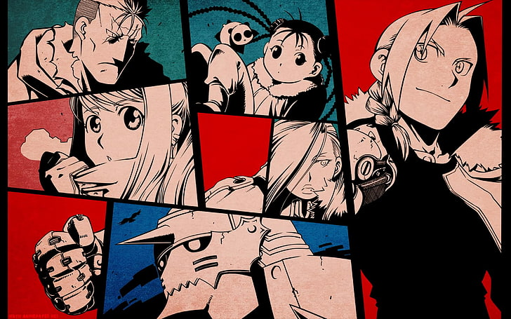

<DOCTYPE html>
<html lang = "ja">
<head>
<meta charset="utf-8">
<meta name=”viewport” content=”width=device-width,initial-scale=1.0″>
<title> 鋼の錬金術師 </title>
<link rel="stylesheet" href="hagane.CSS">
<style>
body{
  padding: 60px;
  margin:  60px;
  background-image: url("3ec862b93a8e4d199b13b6d2d25f3470.jpg");
  background-repeat: no-repeat;
  background-attachment: fixed;
  background-size: cover;
}

</style>
</head>
<body>

<h1 align="center">あらすじ</h1> 
<br><h2  align="center"> 
<br>鋼の二つ名を持つ錬金術師エドワード（エド）と鎧の体の弟アルフォンス（アル）。
<br>兄弟は人体錬成という禁忌を侵し、失った肉体を取り戻すため、賢者の石を探して旅を
<br>していた。旅の途中、錬金術師を狙う男・傷の男（スカー）に襲撃されるが、焔の錬金
<br>術師の二つ名を持つロイ・マスタング中佐に助けられる。その後エドたちは賢者の石の
<br>資料を入手し解読するが、賢者の石の材料が大量の生きた人間であると知って愕然とする。</br>

</body>


</html>